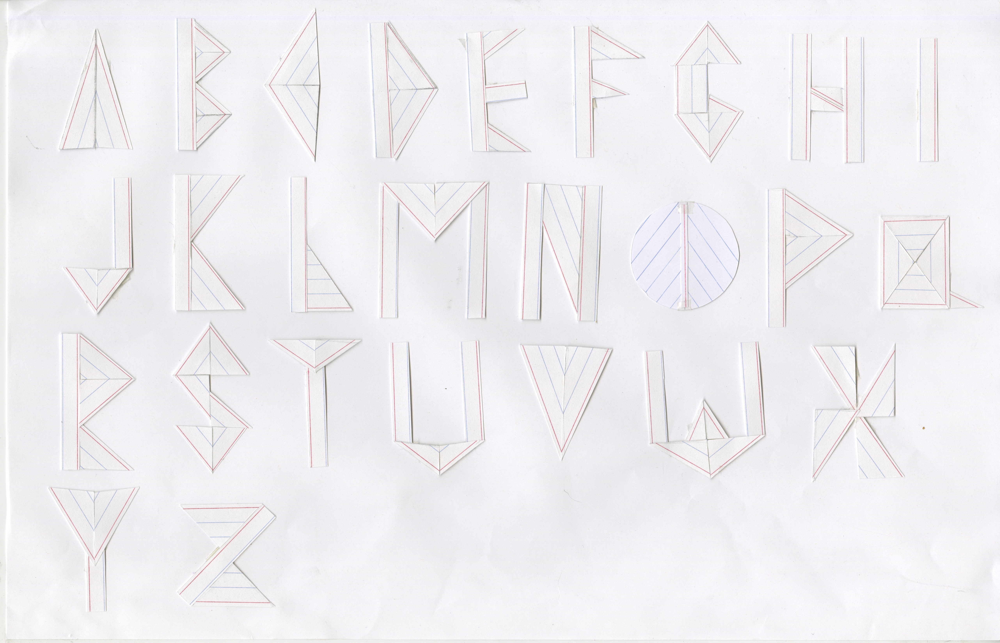

For this project, I collaborated with Nina Flores to create an typeface out of a given material. In our case, we were given 3x5 notecards.
We explored different ways to convey the essence of 3x5 notecards, including using the trademark red and blue lines to create different letterforms. We also experimented using the cards as three-dimensional material, creating individual letters out of single notecards. After comparing the 2D and 3D prototypes, we decided to explore the idea of using the cards as 3D material further, as 3D structures were more unexpected and conveyed the sense of stacking notecards.

Our final typeface was made using the one-notecard-per-letter method that we had explored. We decided to name the font "Study Guide" to keep with the theme of 3x5 notecards.